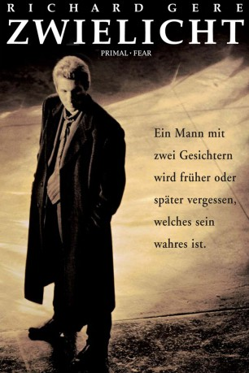

Auszeichnungen: für 1 Oscars nominiert 1 GoldenGlobes gewonnen
 gesehen am 09.02.2016
gesehen am 09.02.2016Alternativ: Primal Fear
Auszeichnungen: für 1 Oscars nominiert 1 GoldenGlobes gewonnen gesehen am 09.02.2016
 
 IMDB-Wertung: 7.7 / 10
IMDB-Wertung: 7.7 / 10  Metascore:
Metascore: 
Der Erzbischof von Chicago wird ermordet aufgefunden. Hauptverdächtiger ist dessen 19jähriger Ministrant Aaron Stampler. Den spektakulären Fall übernimmt Star-Verteidiger Martin Vail, der sich sofort medienwirksam als Einzelkämpfer gegen die Macht der Vorverurteilung in Szene setzt. Anfangs weniger am Schicksal des Häftlings, sondern nur an seiner eigenen Karriere interessiert, gerät Vail dann aber zusehends in den Bann des charismatischen Angeklagten.
Jahr: 1996
Dauer: 130 Minuten
FSK: 16
Land: USA Studio: Paramount PicturesTonspuren: DTS - ,
Untertitel: Englisch, Deutsch,
Auflösung: 1080p (1920x1080) Größe: 11571 MB
Genre: Thriller, Drama, Krimi, Mystery
Regisseur: Gregory Hoblit
Drehbuch: William Diehl, Steve Shagan, Ann Biderman
Soundtrack: James Newton Howard
Darsteller:
 Richard Gere als Martin Vail
Richard Gere als Martin Vail Laura Linney als Janet Venable
Laura Linney als Janet Venable John Mahoney als Shaughnessy
John Mahoney als Shaughnessy Alfre Woodard als Shoat
Alfre Woodard als Shoat Frances McDormand als Molly
Frances McDormand als Molly Edward Norton als Aaron
Edward Norton als Aaron Terry O'Quinn als Bud Yancy
Terry O'Quinn als Bud Yancy Andre Braugher als Tommy Goodman
Andre Braugher als Tommy Goodman Steven Bauer als Joey Pinero
Steven Bauer als Joey Pinero Joe Spano als Abel Stenner
Joe Spano als Abel Stenner Tony Plana als Martinez
Tony Plana als Martinez Stanley Anderson als Archbishop Rushman
Stanley Anderson als Archbishop Rushman Maura Tierney als Naomi Chance
Maura Tierney als Naomi Chance Jon Seda als Alex
Jon Seda als Alex Reg Rogers als Jack Connerman
Reg Rogers als Jack Connerman Kenneth Tigar als Weil
Kenneth Tigar als Weil Mike Bacarella als Sergeant
Mike Bacarella als SergeantDatei: X:\1996\Zwielicht (1996, FSK16, 1920x1080).mkv seit 01.02.2016
Festplatte: HD 1996-2002
 Es gibt insgesamt 78 Filme in der Gruppe '1996'
Es gibt insgesamt 78 Filme in der Gruppe '1996'